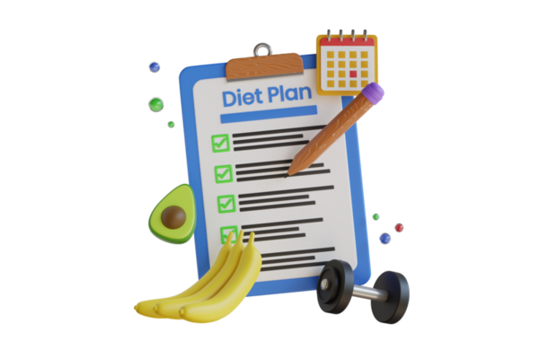
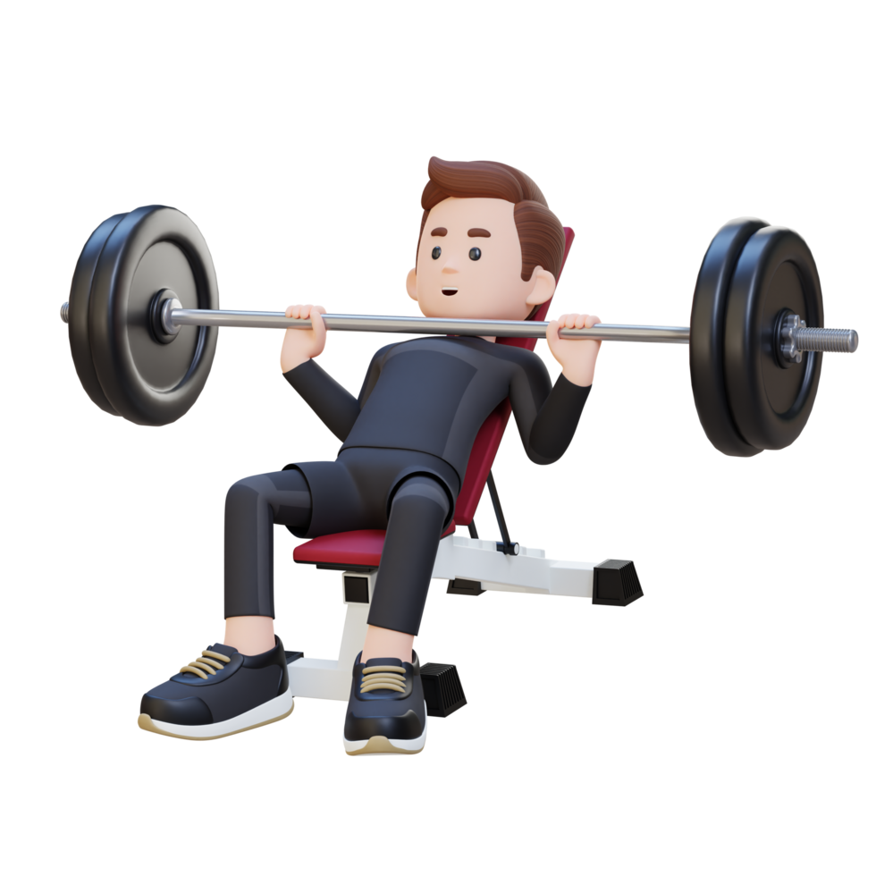

Routine check-ups help in early detection of diseases and maintain overall health.

Eating a healthy diet rich in proteins, vitamins, and minerals supports body functions.

Regular workouts, including strength training and cardio, improve fitness and endurance.
Drinking sufficient water maintains body hydration and supports organ function.
Adequate rest is essential for muscle recovery, brain function, and overall well-being.
Stress management, meditation, and therapy promote emotional stability.